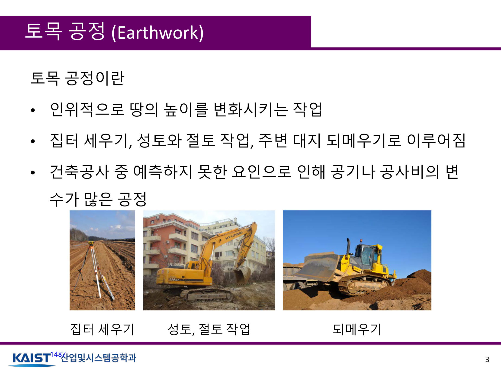

Korea Advanced Institute of Science and Technology#080학습·RL·IL·VLA학술 발표자료
딥러닝 기반 강화학습을 이용한 토목 공정 계획
딥러닝 기반 강화학습을 이용한 토목 공정 계획
지민기, 우성철, 정요한, 박진규, 문일철
한줄 요약 — 굴삭기 5개 행동과 트럭 6개 행동의 Q값을 상태크기 n²+4인 별도 신경망으로 근사하고 성공 작업 +10·할인율 0.9의 Double DQN을 작은 격자부터 확장해, 크기 3·5·8·10 모두에서 이론 최적 행동 수의 1.15배 이내로 절토·적재·운반·배출 공정을 완료했다.
1.연구 배경 및 동기
굴삭기와 트럭의 전체 토공 흐름을 함께 학습하기
토공 공정은 집터 조성, 절토·성토와 되메우기 등으로 구성되며 거의 모든 건설공정에 포함되는 반복적 대량 작업이다. 공정 순서와 장비 간 대기 때문에 효율과 비용이 크게 달라지고 작업자 숙련도에 따라 생산성이 좌우된다. 기존 토량 배분과 최소 운반거리 최적화는 전체 물량 배치에는 강하지만 굴삭기가 파고 트럭이 싣고 이동해 매립지에 내리는 연속 의사결정을 함께 다루기 어렵다.
이 자료는 굴삭기와 트럭을 함께 모델링한다. 굴삭기는 땅을 흙으로 바꾸고 트럭은 흙을 싣고 매립지로 운반해 내린다. 두 에이전트는 같은 격자에 함께 있을 수 있고 매 tick 굴삭기가 먼저, 트럭이 다음으로 행동한다. 상태공간이 환경 크기 n에 따라 n² 규모로 커지므로 표형 Q-learning 대신 신경망으로 행동가치를 근사하고 DQN 과대추정 편향을 줄이기 위해 Double DQN을 사용한다.

원문 발표자료 · PDF p.3 — 캡션이 없는 발표자료의 의미 있는 원문 시각자료
선행 연구의 한계
토량 배분만으로는 절토·적재·운반·배출의 시점별 상호작용을 정하기 어렵다.
장비 위치와 토양상태의 표형 Q함수는 격자 크기와 함께 폭증한다.
일반 DQN은 행동 선택과 평가의 최대화로 Q값을 과대추정할 수 있다.
처음부터 큰 환경을 학습하면 탐색과 에피소드 길이가 급증한다.
이 연구의 기여
굴삭기 1대와 트럭 1대의 연동 격자 시뮬레이션을 구성했다.
위치 one-hot n²와 작업대상 방향 4개를 합친 상태를 정의했다.
두 ReLU 은닉층과 Double DQN으로 장비별 Q함수를 근사했다.
3→5→8→10 순차 학습과 환경별 행동 수·학습시간을 제시했다.
2.방법론 및 시스템 구성
격자는 매립지, 통로, 땅과 흙으로 구성된다. 굴삭기는 상하좌우 이동과 땅파기 등 5개 행동, 트럭은 이동·흙 싣기·내리기 등 6개 행동을 가진다. 매 tick 굴삭기가 먼저 행동하고 트럭이 이어서 행동하며 두 장비는 같은 셀에 존재할 수 있다. 모든 땅이 흙으로 바뀌고 흙이 매립지로 운반되면 에피소드가 끝난다.
각 에이전트 상태는 현재 위치를 나타내는 n²차원 one-hot 벡터와 다음 작업대상이 있는 방향의 4차원 벡터를 연결한 n²+4차원이다. 굴삭기는 가장 가까운 땅, 트럭은 가장 가까운 흙 방향을 관측한다. 각 Q네트워크는 입력 뒤에 4n²+16개 ReLU 뉴런을 갖는 은닉층 두 개를 두고 장비별 행동 Q값을 출력한다. Double DQN은 온라인 네트워크가 행동을 선택하고 target network가 평가한다.
처리 파이프라인
1
이종 장비 격자 생성
매립지·통로·셀별 땅과 흙을 초기화하고 굴삭기와 트럭을 매립지에 배치한다.
2
장비별 상태 인코딩
현재 셀의 n² one-hot 위치와 굴삭기의 땅 방향 또는 트럭의 흙 방향을 연결한다.
3
순차 장비 행동
굴삭기가 이동 또는 절토를 먼저 하고 트럭이 이동·적재·배출을 수행한다.
4
Double DQN 갱신
각 장비의 별도 Q네트워크와 target network로 선택과 평가를 분리한다.
5
단계적 난이도 확장
완료 행동 수가 이론 최적값의 1.15배 안에 들면 환경을 3에서 5, 8, 10으로 늘린다.
원문 수식과 의미
Q-learning 갱신식
현재 가치에 시간차 오차를 반영한다.
Double DQN target
온라인 네트워크로 행동을 선택하고 target network로 평가한다.
DQN 비교 target
일반 DQN은 target network 최대값을 직접 사용한다.
3.핵심 기술
굴삭기와 트럭의 역할 분해
굴삭기 정책은 땅을 찾아 이동해 흙으로 바꾸고 트럭 정책은 흙을 적재한 뒤 매립지로 돌아가 내린다. 두 장비가 같은 셀에 있을 수 있고 굴삭기가 먼저 행동하므로 후속 트럭 상태가 생산물을 이용한다.
공동 행동공간 대신 장비별 행동공간을 유지하지만 중앙집중 critic이나 명시적 통신이 없어 장비 수가 늘 때의 비정상성과 교착은 다루지 않는다.
굴삭기 5개 행동
트럭 6개 행동
굴삭기 선행·트럭 후행
동일 셀 공존 가능
n²+4 상태와 크기 적응 신경망
장비 위치는 n²차원 one-hot이고 작업대상 방향은 네 차원이다. 굴삭기는 가까운 땅, 트럭은 가까운 흙 방향을 사용한다.
각 은닉층은 입력 차원의 네 배인 4n²+16개 ReLU 뉴런으로 구성된다. 환경 크기가 달라지면 입력과 파라미터 수도 바뀌므로 완전한 크기 불변 정책은 아니다.
입력 n²+4
은닉층당 4n²+16
장비별 대상 방향
Double DQN과 단계적 난이도 확장
Double DQN은 선택과 평가를 분리해 과대추정을 줄인다. 땅파기·싣기·내리기의 성공에만 +10을 주고 다른 행동은 0으로 둔다.
크기 3부터 시작해 완료 행동 수가 최적값의 1.15배 이내면 다음 크기로 넘어가 협업의 기본 순서를 작은 환경에서 먼저 익힌다.
성공 작업 +10
할인율 0.9
3→5→8→10 curriculum
4.실험 결과
실험 환경·장비·데이터
굴삭기 1대와 트럭 1대의 2차원 격자
환경 크기 3·5·8·10과 초기 토량 1
성공 작업 +10·기타 0·할인율 0.9
장비별 별도 Double DQN
실험 프로토콜
크기 3에서 시작한다.
최적 행동 수의 1.15배 이내면 다음 크기로 확장한다.
환경별 최초 통과 에피소드·행동 수·최적값·누적시간을 기록한다.
5×5 실행 예시를 3D로 확인한다.
비교 기준
환경별 이론 최적 행동 수
최적값의 1.15배 통과 기준
일반 DQN target
평가 지표
최초 통과 에피소드
완료 행동 수
이론 최적 행동 수
완료/최적 비율
누적 학습시간
핵심 결과 해석
크기 3은 78번째 에피소드에 35행동으로 완료해 최적 33행동 대비 약 1.06배였다. 크기 5는 122번째에 218/193행동, 크기 8은 153번째에 982/883행동, 크기 10은 231번째에 2,043/1,783행동이었다. 네 환경 모두 설정한 1.15배 이내 통과조건을 만족했다.
환경이 커지면서 누적 학습시간은 158.09초에서 8,718.95초로 늘었다. 5×5 실행 그림은 파란 굴삭기와 빨간 트럭의 진행을 보여준다. 그러나 반복실험 분산, 무작위 시드, 하드웨어와 다른 알고리즘 대비 통계 검정은 없어 Double DQN의 절대 우월성보다 이종 장비 공정을 큰 격자까지 학습한 가능성 증명으로 해석해야 한다.
정량 결과
평가 항목
정량 결과
조건·맥락
원문 근거
크기 3
78회, 35/33행동, 158.09초
1.15배 기준 최초 통과
PDF p.24
크기 5
122회, 218/193행동, 828.19초
순차 학습 두 번째 단계
PDF p.24
크기 8
153회, 982/883행동, 3,868.86초
1.15배 기준 통과
PDF p.24
크기 10
231회, 2,043/1,783행동, 8,718.95초
가장 큰 환경
PDF p.24
보상·할인율
성공 +10, 기타 0, γ=0.9
굴삭기와 트럭 공통
PDF p.23
환경 curriculum
3→5→8→10
최적 행동 수 1.15배 이내면 확장
PDF p.23
실패 사례와 경계조건
크기 증가와 함께 학습시간이 급증한다.
불가능 행동은 no-op이어서 행동 수만 늘 수 있다.
크기 10은 최적보다 약 14.6% 많은 행동이 필요하다.
충돌·교착·용량 초과와 반복분산은 제시되지 않았다.
5.한계 및 향후 연구
현재 한계
격자 시뮬레이션으로 실제 동역학과 유압을 제외한다.
토양은 이산 수량이며 토질·함수율·경사가 없다.
장비가 각각 한 대뿐이고 충돌회피·통신지연을 제외한다.
환경 크기가 바뀌면 신경망 크기도 바뀐다.
반복 평균·분산과 실차 검증이 없다.
향후 연구
더 크고 다양한 형상에서 검증한다.
다수 장비의 배차·대기·충돌을 포함한다.
GNN·attention 등 크기 불변 표현을 사용한다.
토질·연료·작업시간·안전을 보상에 포함하고 실차와 연계한다.
6.한마디로 정리
핵심 방법은?
굴삭기와 트럭의 역할을 분리하고 n²+4 상태의 두 Double DQN을 작은 격자부터 학습했다.
같은 KAIST 단일 굴삭기 자료와 달리 트럭을 명시적으로 추가한다. ‘다양한 환경’은 국소 5×5 상태와 표형 Q-learning, ‘Route Generation’은 Double DQN과 결손 토양을 다루며, 본 자료는 크기 불변성은 약하지만 절토 이후 적재·운반·배출까지 공정범위를 넓힌다.
‘Earthwork Planning via Reinforcement Learning with Heterogeneous Construction Equipment’와 문제설정이 유사하지만 학술논문은 순차·독립 Q-learning을, 이 발표자료는 Double DQN curriculum과 학습시간 표를 강조한다. 공식 버전 관계가 PDF에 없어 별도 기록하되 내용 중복 가능성을 명시해야 한다.
상위 장비 순서를 버킷 궤적과 차량경로 목표로 전달할 수 있다.
TD3·MPC는 연속동작, 본 Double DQN은 장비 역할과 셀 순서를 담당한다.
one-hot 대신 elevation patch와 장비 그래프를 쓰면 확장성이 높아진다.
고유 축은 굴삭기·트럭 협업과 환경 크기 curriculum이다.
7.전체 그림·표
본문 핵심 위치에 배치하지 않은 원문 Figure와 Table을 원문 페이지 순서로 수록한다.